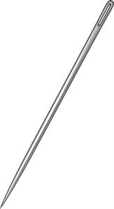
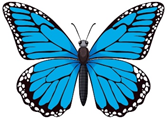
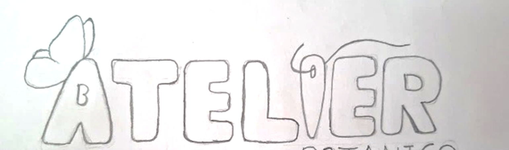
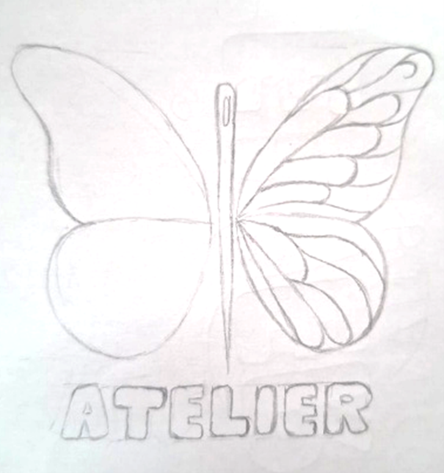
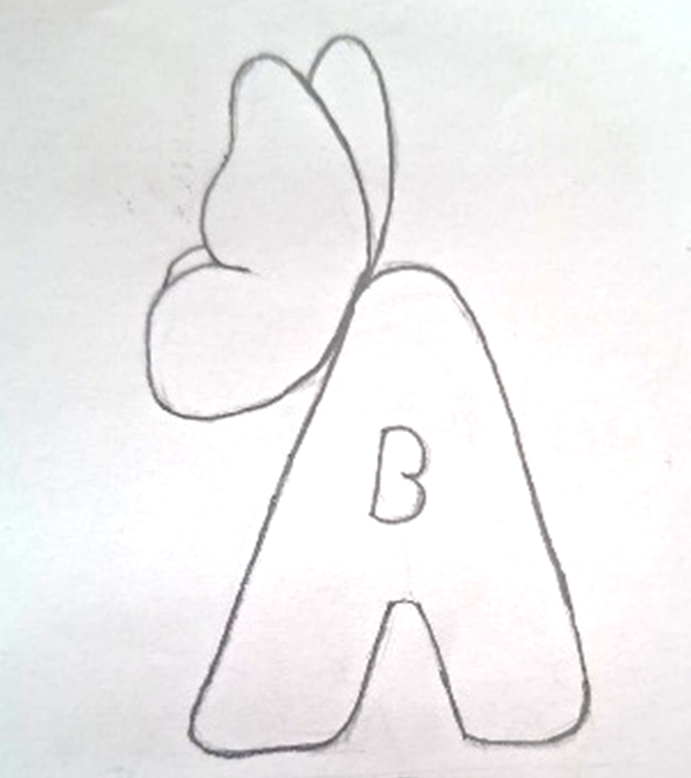
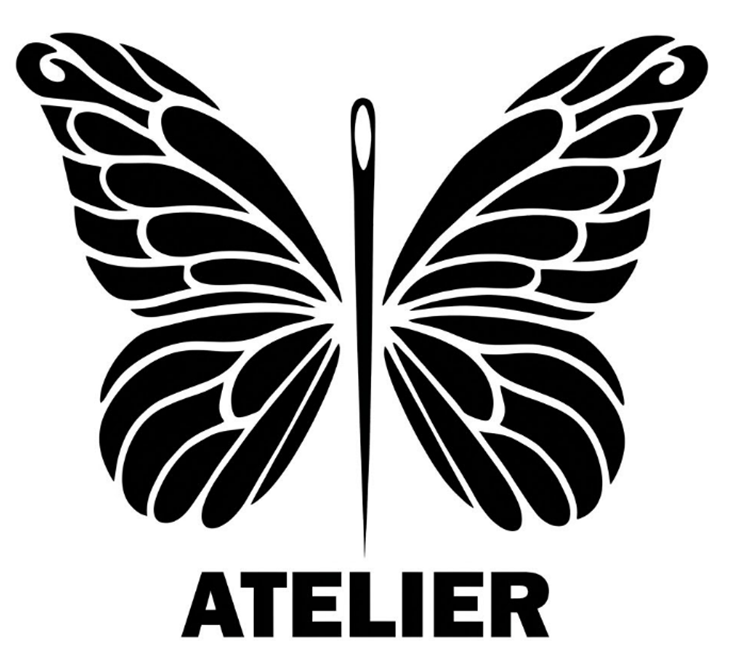

Arte Textil
Punto de partida artesanal que celebra la confección de alta precisión y vestuarios con identidad.
El imagotipo de Atelier integra una aguja de coser con alas de mariposa. La paleta multicolor representa la biodiversidad de la Selva Central, el arte textil, el ecodiseño y la fantasía de los vestuarios.
Se exploraron propuestas enfocadas en los conceptos clave de la marca para lograr reconocimiento en vestuarios temáticos, empaques y medios digitales.
Punto de partida artesanal que celebra la confección de alta precisión y vestuarios con identidad.
Inspiración directa en la flora y fauna silvestre, transmitiendo biodiversidad y frescura.
Compromiso con materiales sostenibles, insumos reciclados y procesos de bajo impacto.
Elementos escénicos y mágicos reflejados en alas articuladas y diseños botánicos.
Estructura pensada para la durabilidad, reutilización y confección de alto nivel.
Trazo limpio y contemporáneo para una perfecta adaptación en canales digitales.
Integración gráfica equilibrada de dos conceptos fundamentales que definen la marca.

Representa la confección, el trabajo textil y la actividad artesanal del taller.

Representan la naturaleza de la Selva Central, la transformación, la creatividad y la fantasía.
Análisis modular del símbolo, la tipografía institucional y su jerarquía gráfica.
Sintetiza la aguja de coser en el eje central con las alas de mariposa a los lados, simbolizando el taller, la ligereza y el ecodiseño.
Ubicado debajo del símbolo para mantener una composición equilibrada, aportando impacto visual, reconocimiento y claridad.
Tipografía sin serifas de trazos gruesos y estructura firme que aporta fuerza, legibilidad y estabilidad frente a las formas orgánicas.
Proceso de descarte y refinamiento técnico hasta llegar al imagotipo final.

Muestra el nombre con una mariposa en la "A" e "i" en forma de aguja. Se descartó por ser muy simple y no transmitir el valor artístico.

Integra aguja central con alas de mariposa en un solo diseño. Se rechazó porque la lectura del texto era incómoda y desequilibrada.

Sintetiza la marca usando solo la letra "A" y una mariposa. Se descartó porque le restaba presencia al nombre completo "Atelier".
Garantizan la correcta reproducción en cualquier sistema de impresión, soporte textil o medio digital.
Sobria, funcional y versátil. Diseñada para aplicaciones técnicas a una sola tinta como sellos mecánicos, grabado en cuero o serigrafía básica.

Elegante, con alto contraste y legibilidad. Ideal para bordados directos sobre prendas oscuras, empaques corporativos y redes sociales.

Versión oficial para medios digitales, catálogo principal, tarjetas de presentación y empaques principales sobre fondos claros.
Verde Oliva + Marrón Orgánico. Diseñada para etiquetas de papel reciclado, cajas kraft y colecciones de algodón 100% orgánico.


Azul Marino + Verde Lima: diseñada para estampados a dos tintas en serigrafía a menor costo sin perder impacto.

Permite la reproducción en prendas como polos o poleras garantizando alto contraste y optimización de insumos.

Combina el rigor del azul con la energía del verde lima para mantener la vivacidad de la Selva Central.
Valores cromáticos extraídos del manual de marca de Atelier S.A.C.